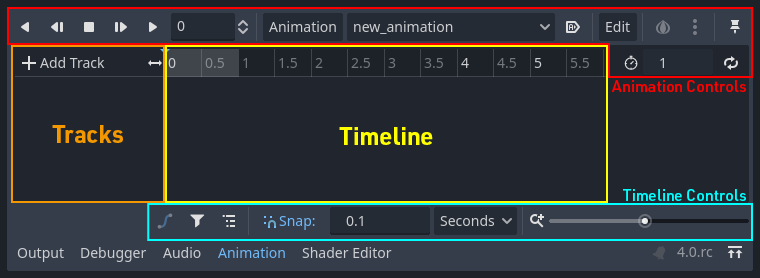
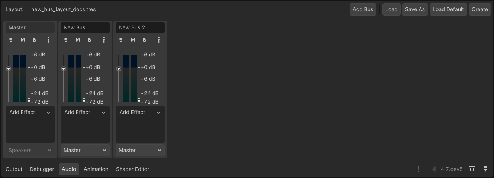

El juego se siente vivo
Animaciones por frames, AnimationPlayer, audio, y Game Feel: el pulido que separa un prototipo de un juego terminado.
“Las reglas son iguales. La diferencia es el juice: cómo se siente cada acción.”
Al terminar la clase van a poder…
- Usar
AnimatedSprite2Dpara animaciones por frames - Controlar animaciones desde código según el estado del personaje
- Integrar efectos de sonido y música con
AudioStreamPlayer - Aplicar principios de Game Feel para que el juego se sienta satisfactorio
Mismo juego, dos sensaciones
Versión A
El personaje se mueve como un bloque estático: sin sonido, sin partículas, sin ninguna retroalimentación.
Versión B
El mismo, con animación de caminar, sonido de pasos, una partícula al saltar y un squash al aterrizar.
AnimatedSprite2D: un flipbook
Una serie de imágenes que se muestran en secuencia rápida, como un flipbook. Cada imagen es un frame.
- Inspector → SpriteFrames → New SpriteFrames
- Crear animaciones con nombre:
idle,run,jump,fall - Arrastrar frames y ajustar los FPS
💡 Recursos gratis
Buscá “free platformer sprite sheet” en itch.io u opengameart.org. Godot importa hojas con Add Frames from Sprite Sheet.
Controlar la animación por código
@onready var sprite = $AnimatedSprite2D func actualizar_animacion(dir: float) -> void: if dir != 0: sprite.flip_h = dir < 0 # espejo si va a la izquierda # Prioridad: primero el aire, después movimiento, después quieto if not is_on_floor(): if velocity.y < 0: sprite.play("jump") else: sprite.play("fall") elif dir != 0: sprite.play("run") else: sprite.play("idle")
if/elif en orden de prioridad. Primero lo más importante (¿está en el aire?). El orden importa.AnimationPlayer: animar cualquier cosa
No solo sprites: puede animar cualquier propiedad de cualquier nodo — posición, escala, color, opacidad, volumen…
Trabaja con una línea de tiempo y keyframes (fotogramas clave). Godot interpola el resto.

Casos típicos + parpadeo de daño
- Muerte: el personaje se encoge y desaparece
- Daño: parpadeo rojo rápido al recibir un golpe
- Puerta que rota o se desliza
- Texto flotante de daño que sube y se desvanece
@onready var anim = $AnimationPlayer func recibir_dano(cant: int) -> void: vida -= cant anim.play("hit_flash") if vida <= 0: anim.play("death")
modulate del Sprite entre WHITE y RED varias veces en 0.4 s. Uno de los efectos de Game Feel más fáciles y más impactantes.El game feel en juegos que jugaste
🏔️ Celeste
El estándar de oro del juice: animación, screenshake, partículas y sonido en cada salto y dash.
🔫 Nuclear Throne / Downwell
Vlambeer y el screenshake: la pantalla “golpea” con cada disparo. Puro feedback.
🥩 Super Meat Boy
Muerte instantánea + reinicio inmediato + partículas de sangre. El feedback hace que perder no moleste.
Los nodos de audio
| Nodo | Cuándo usar |
|---|---|
AudioStreamPlayer | Audio sin posición. Música de fondo y efectos de UI. |
AudioStreamPlayer2D | Audio con posición en el mundo 2D. El volumen baja con la distancia. |
AudioStreamPlayer3D | Lo mismo, pero en 3D. |
.ogg para música (mejor compresión) y .wav para efectos cortos (menor latencia). En Godot 4, evitá .mp3 cuando puedas.Importar y reproducir
- Arrastrá el archivo (
.ogg/.wav) al FileSystem - Para música: activá Loop en la importación
- Para efectos: Loop desactivado
@onready var sfx_salto = $SFX_Salto @onready var sfx_dano = $SFX_Dano func saltar(): velocity.y = SALTO sfx_salto.play() func recibir_dano(cant): vida -= cant sfx_dano.play() # la música sigue sonando
Buses: música y efectos por separado
Project → Open Audio Bus Layout. Canales de volumen independientes:
- Master — volumen general
- Music — solo la música
- SFX — solo los efectos
AudioServer.set_bus_volume_db( AudioServer.get_bus_index("Music"), linear_to_db(0.5)) # 50%

Cámara con smoothing
Que la cámara siga suavemente al jugador en vez de pegarse rígida. Un cambio chico, un salto de calidad enorme.
Inspector del Camera2D → Position Smoothing → Enable: ON, Speed ~5.0.
@onready var camara = $Camera2D func _ready(): camara.position_smoothing_enabled = true camara.position_smoothing_speed = 5.0
Squash & Stretch con Tween
# Un Tween anima una propiedad de forma programática, sin keyframes func squeeze_effect() -> void: var tween = create_tween() # Aplastar: ancho +30%, alto -30% tween.tween_property(sprite, "scale", Vector2(1.3, 0.7), 0.05) # Volver a normal tween.tween_property(sprite, "scale", Vector2(1.0, 1.0), 0.15)
Partículas simples
- Agregá un nodo
GPUParticles2Dal personaje - Config:
Amount = 10,Lifetime = 0.3,One Shot = true,Emitting = false - Disparalas por código:
$Particulas.restart()
🎆 Dónde usarlas
Un puñado de polvo al saltar y al aterrizar, o un destello al juntar una moneda. Detalles chicos, impacto grande.
Práctica: pulir el proyecto
Tomá el juego de las clases anteriores y sumale capas de pulido, de menor a mayor dificultad:
| 🟢 Fácil | Música de fondo en loop + efecto de sonido al juntar una moneda |
| 🟢 Fácil | Activar smoothing en la Camera2D |
| 🟡 Medio | Conectar el AnimatedSprite2D al estado (idle/run/jump/fall) |
| 🟡 Medio | Parpadeo rojo al recibir daño (AnimationPlayer) |
| 🔴 Difícil | Squash & Stretch al aterrizar (Tween) + partículas |
El pulido transforma el juego
🧭 Repaso
AnimatedSprite2D: frames por estado, controlados por códigoAnimationPlayer: anima cualquier propiedad- Audio:
AudioStreamPlayer+ buses Music/SFX - Game Feel: animación, sonido, partículas, cámara
📝 Tarea
- Al menos 3 efectos de sonido (salto, daño, moneda)
- Animaciones conectadas al estado en
_physics_process() - Efecto visual al recibir daño
- Desafío: Squash & Stretch completo (aplastar y estirar)
Capturas del editor: documentación oficial de Godot — CC BY 4.0. · “El juego se siente vivo.”